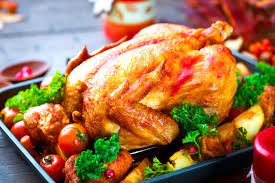

Pavo al horno

Dicen que la elegancia está en la sencillez y esta receta no es la excepción.
Prepara este pavo en minutos
con ingredientes básicos, el resultado es sorprendente.
Ingredientes
Preparación
- 1 pavo entero de 6 kilos
- 6 cucharadas de mantequilla
- 1 litro de agua tibia
- 3 cucharadas de consomé granulado de pollo
- 2 cucharadas de perejil seco
- 2 cucharadas de cebolla seca en trozo
- 2 cucharadas de sal con hierbas
A Cocinar
- Precalienta el horno a 175° centígrados. Lava y enjuaga el pavo, desecha las vísceras o agrégalas a la charola y te gustan.
- Coloca el pavo en una rosticera o cacerola de hierro fundido. Jala la piel de la pechuga del pavo para que se desprenda un poco.
Coloca 3 cucharadas de mantequilla en ambos sobre y debajo de la piel de la pechuga. Esto hace que la pechuga salga más jugosa.
- Mezcla el agua tibia con el consomé de pollo, perejil y cebolla. Vierte sobre el pavo. Salpimienta bien.
- Tapa con papel aluminio y hornea de 3 1/2 a 4 horas, hasta que la temperadura interna del pavo alcance los 80° centígrados (180° F).
Destapa durante los últimos 45 minutos para que la poel del pavo se dore.
Notas:
Puedes preparar una salsa al gusto puedes a compañar con Salsa de manzana para pavo al horno
No olvides acompalarlo con toda tu familia
Informacion Nutrimental
| Horario de clases |
| Energia |
Carbohidratos |
Proteina |
Fibra |
Azucar |
Grasa |
Sodio |
Potacio |
| 711 kj |
13:00 P.M. A 14:00 P.M. |
12:00 P.M. A 14:00 P.M. |
12:00 P.M. A 14:00 P.M. |
12:00 P.M. A 14:00 P.M. |
12:00 P.M. A 14:00 P.M. |
12:00 P.M. A 14:00 P.M. |